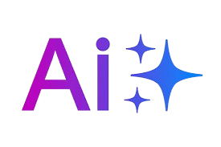

help
see result
You can write (say) about:
*about character and habits - for
example: “I like to work in a team, but I value personal space”.
*about the way of making decisions - “I am guided bu intuition
rather than facts”.
*about favourite activities - “I like
helping people”.
*about work style - “I like stability”.
*about communication - “I easily find a common language with
people”.
*about reaction to stress - “I keep my cool in difficult situations”.
Please enter your interests